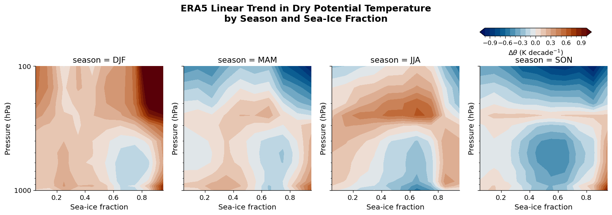
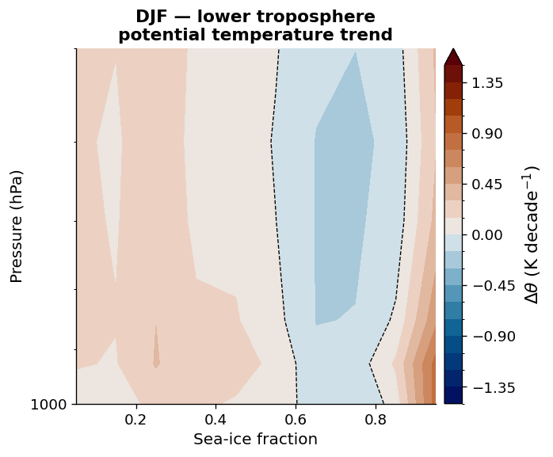
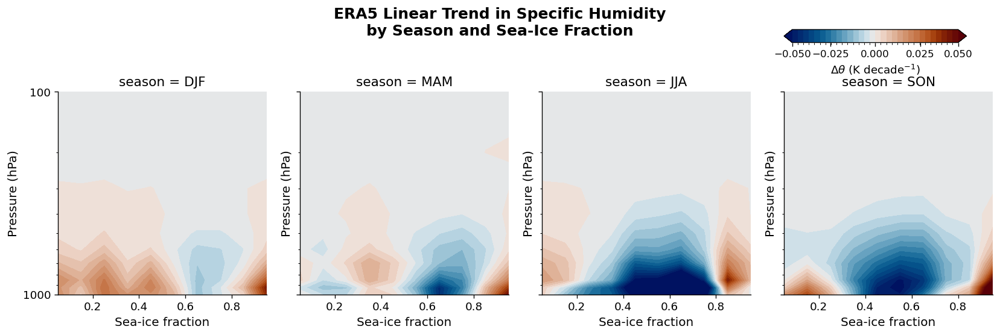
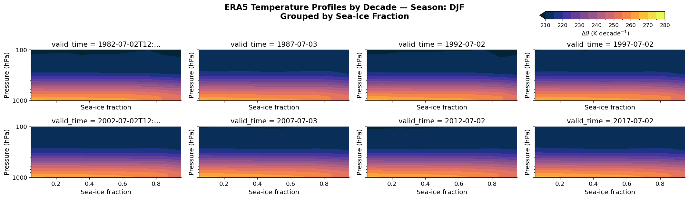
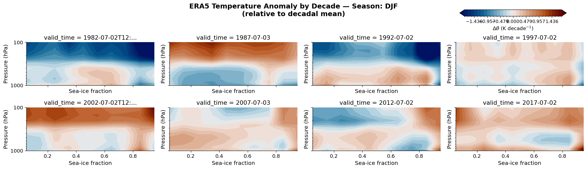
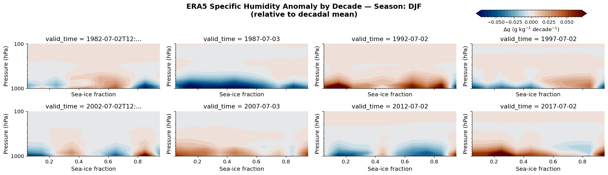

Arctic Atmosphere in a Warming Climate: ERA5 Sea-Ice Profiles#
The Arctic is warming two to four times faster than the global mean — a phenomenon known as Arctic amplification. Understanding how the vertical structure of temperature and humidity responds to declining sea ice is central to the (AC)³ project (Arctic Amplification: Climate Relevant Atmospheric and Surface Processes, and Feedback Mechanisms).
This notebook visualises decadal trends in atmospheric profiles binned by season and sea-ice cover fraction, derived
from ERA5 reanalysis data. All data live in xarray Datasets, which makes the trend analysis — including the
polyfit call — a single line of code.
Dataset — data/era5_sea_ice_to_libradtran.nc (pre-processed by era5_seasonal_sea_ice_profiles.ipynb):
Dimension |
Description |
|---|---|
|
DJF · MAM · JJA · SON |
|
Decade index (1979 – present) |
|
Fractional sea-ice concentration (0 → 1) |
|
Atmospheric pressure in hPa |
The variables t (temperature, K) and q (specific humidity, kg kg⁻¹) are ensemble means within each bin.
A linear polyfit along valid_time converts the decadal time axis into a trend (K decade⁻¹ or g kg⁻¹ decade⁻¹).
# pip install cmcrameri
import xarray as xr
import numpy as np
import matplotlib.pyplot as plt
import matplotlib.ticker as mticker
import cmocean
import cmcrameri.cm as cmc
# ── Global style ────────────────────────────────────────────────────────────
plt.rcParams.update({
"font.family": "sans-serif",
"font.size": 13,
"axes.titlesize": 14,
"axes.labelsize": 13,
"xtick.labelsize": 11,
"ytick.labelsize": 11,
"figure.dpi": 120,
"axes.spines.top": False,
"axes.spines.right": False,
})
ds_out = xr.open_dataset('data/era5_sea_ice_to_libradtran.nc', chunks='auto')
/home/josh/micromamba/envs/mamba_josh/lib/python3.13/site-packages/pyproj/network.py:59: UserWarning: pyproj unable to set PROJ database path.
_set_context_ca_bundle_path(ca_bundle_path)
ds_out
<xarray.Dataset> Size: 100kB
Dimensions: (season: 4, valid_time: 8, sea_ice_cover: 10,
pressure_level: 13)
Coordinates:
* pressure_level (pressure_level) int64 104B 50 100 150 200 ... 850 925 1000
* season (season) <U3 48B 'DJF' 'MAM' 'JJA' 'SON'
* valid_time (valid_time) datetime64[ns] 64B 1982-07-02T12:00:00 ... 2...
* sea_ice_cover (sea_ice_cover) float64 80B 0.05 0.15 0.25 ... 0.85 0.95
Data variables:
t (season, valid_time, sea_ice_cover, pressure_level) float64 33kB dask.array<chunksize=(4, 8, 10, 13), meta=np.ndarray>
q (season, valid_time, sea_ice_cover, pressure_level) float64 33kB dask.array<chunksize=(4, 8, 10, 13), meta=np.ndarray>
theta (season, valid_time, sea_ice_cover, pressure_level) float64 33kB dask.array<chunksize=(4, 8, 10, 13), meta=np.ndarray>ds_out['theta'] = ds_out['t'] * (1000 / ds_out['pressure_level'])**0.286 # dry potential temperature (K)
ds_trend = ds_out - ds_out.mean(dim='valid_time') # anomaly relative to decadal mean
Potential Temperature Trends (K decade⁻¹)#
Dry potential temperature \(\theta = T\,(p_0/p)^{0.286}\) removes the dry-adiabatic lapse rate, making vertical structure easier to compare across seasons and ice fractions.
A first-order polyfit along the decade axis gives the linear trend at each (pressure, sea-ice) grid point.
Consistent warming in the lower troposphere over high ice-cover grid cells, particularly in winter (DJF),
is a characteristic signature of Arctic amplification. The entire calculation — including the fit, unit conversion,
and faceted plot — relies on a handful of xarray operations.
trend_theta = (
ds_out.polyfit(dim='valid_time', deg=1)
.isel(degree=0)
.theta_polyfit_coefficients
* (1e9 * 3600 * 24 * 365 * 10) # convert ns⁻¹ → K decade⁻¹
)
levels = np.arange(-1.0, 1.05, 0.1)
fg = trend_theta.plot.contourf(
y='pressure_level',
ylim=(1000, 100),
yscale='log',
col='season',
col_wrap=4,
levels=levels,
cmap=cmc.vik, # perceptually uniform diverging (Crameri 2018)
add_colorbar=False,
)
for ax in fg.axs.flat:
ax.set_xlabel("Sea-ice fraction", fontsize=12)
ax.set_ylabel("Pressure (hPa)", fontsize=12)
ax.yaxis.set_major_formatter(mticker.ScalarFormatter())
ax.yaxis.set_minor_formatter(mticker.NullFormatter())
ax.tick_params(labelsize=11)
fg.fig.suptitle(
"ERA5 Linear Trend in Dry Potential Temperature\nby Season and Sea-Ice Fraction",
y=1.08, fontsize=15, fontweight="bold",
)
fg.fig.set_size_inches(14, 4.5)
plt.tight_layout()
# ── Colorbar: upper-right corner, above the panel row ──────────────────────
# Grab the mappable from the first filled-contour artist in the FacetGrid
mappable = fg.axs.flat[0].collections[0]
cbar_ax = fg.fig.add_axes([0.78, 0.92, 0.18, 0.04]) # [left, bottom, width, height]
cb = fg.fig.colorbar(mappable, cax=cbar_ax, orientation='horizontal')
cb.set_label(r"$\Delta\theta$ (K decade$^{-1}$)", fontsize=11)
cb.ax.tick_params(labelsize=10)
plt.show()

Winter Close-Up: DJF Lower Troposphere#
Arctic amplification is strongest in autumn and winter, when sea-ice retreat exposes the dark ocean to long-wave emission and turbulent heat fluxes. The panel below zooms into the DJF lower troposphere (surface – 500 hPa) across the full sea-ice fraction range, resolving the near-surface inversion signal.
fig, ax = plt.subplots(figsize=(6, 5))
djf_trend = trend_theta.sel(season="DJF")
cf = djf_trend.plot.contourf(
y="pressure_level",
ylim=(1000, 500),
yscale="log",
levels=np.arange(-1.5, 1.55, 0.15),
cmap=cmc.vik,
ax=ax,
add_colorbar=True,
cbar_kwargs={"label": r"$\Delta\theta$ (K decade$^{-1}$)", "pad": 0.02},
)
# zero-trend contour for reference
djf_trend.plot.contour(
y="pressure_level",
ylim=(1000, 500),
yscale="log",
levels=[0],
colors=["k"],
linewidths=0.8,
linestyles="--",
ax=ax,
add_colorbar=False,
)
ax.set_title("DJF — lower troposphere\npotential temperature trend", fontsize=13, fontweight="bold")
ax.set_xlabel("Sea-ice fraction", fontsize=12)
ax.set_ylabel("Pressure (hPa)", fontsize=12)
ax.yaxis.set_major_formatter(mticker.ScalarFormatter())
ax.yaxis.set_minor_formatter(mticker.NullFormatter())
ax.tick_params(labelsize=11)
plt.tight_layout()
plt.show()

Specific Humidity Trends (g kg⁻¹ decade⁻¹)#
A warmer Arctic atmosphere holds more water vapour (Clausius–Clapeyron relation). Moistening of the Arctic lower troposphere amplifies the greenhouse effect and feeds back into further warming — making the humidity trend a key diagnostic for (AC)³ simulations performed with pyRadtran.
trend_q = (
ds_out.polyfit(dim="valid_time", deg=1)
.isel(degree=0)
.q_polyfit_coefficients
* (1e9 * 3600 * 24 * 365 * 10) # ns⁻¹ → decade⁻¹
* 1000 # kg kg⁻¹ → g kg⁻¹
)
# symmetric levels centred on zero — changes in sign are clearly visible
vmax = float(np.abs(trend_q).quantile(0.97))
levels_q = np.linspace(-vmax, vmax, 31)
fg = trend_q.plot.contourf(
y="pressure_level",
ylim=(1000, 100),
yscale="log",
col="season",
col_wrap=4,
levels=levels_q,
cmap=cmc.vik,
add_colorbar=False,
cbar_kwargs={
"label": r"$\Delta q$ (g kg$^{-1}$ decade$^{-1}$)",
"shrink": 0.8,
"pad": 0.02,
},
)
for ax in fg.axs.flat:
ax.set_xlabel("Sea-ice fraction", fontsize=12)
ax.set_ylabel("Pressure (hPa)", fontsize=12)
ax.yaxis.set_major_formatter(mticker.ScalarFormatter())
ax.yaxis.set_minor_formatter(mticker.NullFormatter())
ax.tick_params(labelsize=11)
fg.fig.suptitle(
"ERA5 Linear Trend in Specific Humidity\nby Season and Sea-Ice Fraction",
y=1.03, fontsize=15, fontweight="bold",
)
# ── Colorbar: upper-right corner, above the panel row ──────────────────────
# Grab the mappable from the first filled-contour artist in the FacetGrid
mappable = fg.axs.flat[0].collections[0]
cbar_ax = fg.fig.add_axes([0.78, 0.92, 0.18, 0.04]) # [left, bottom, width, height]
cb = fg.fig.colorbar(mappable, cax=cbar_ax, orientation='horizontal')
cb.set_label(r"$\Delta\theta$ (K decade$^{-1}$)", fontsize=11)
cb.ax.tick_params(labelsize=10)
cb.ax.set_xticks([-0.05, -0.025, 0.00, 0.025, 0.05])
fg.fig.set_size_inches(14, 4.5)
plt.tight_layout()
plt.show()
/tmp/ipykernel_15137/479977737.py:51: UserWarning: This figure includes Axes that are not compatible with tight_layout, so results might be incorrect.
plt.tight_layout()

Absolute Temperature Profiles by Decade#
While trends reveal how fast the Arctic is changing, the absolute temperature structure determines which radiative transfer regime applies in pyRadtran simulations. Each panel below shows a single decade for the DJF season, binned by sea-ice fraction.
fg = ds_out.t.isel(season=0).plot.contourf(
levels=np.arange(210, 281, 5),
cmap=cmocean.cm.thermal,
col="valid_time",
col_wrap=4,
yscale="log",
y="pressure_level",
ylim=(1000, 100),
add_colorbar=False,
)
for ax in fg.axs.flat:
ax.set_xlabel("Sea-ice fraction", fontsize=12)
ax.set_ylabel("Pressure (hPa)", fontsize=12)
ax.yaxis.set_major_formatter(mticker.ScalarFormatter())
ax.yaxis.set_minor_formatter(mticker.NullFormatter())
ax.tick_params(labelsize=11)
season_name = str(ds_out.season.values[0])
fg.fig.suptitle(
f"ERA5 Temperature Profiles by Decade — Season: {season_name}\nGrouped by Sea-Ice Fraction",
y=1.03, fontsize=15, fontweight="bold",
)
mappable = fg.axs.flat[0].collections[0]
cbar_ax = fg.fig.add_axes([0.78, 0.95, 0.18, 0.04]) # [left, bottom, width, height]
cb = fg.fig.colorbar(mappable, cax=cbar_ax, orientation='horizontal')
cb.set_label(r"$\Delta\theta$ (K decade$^{-1}$)", fontsize=11)
cb.ax.tick_params(labelsize=10)
#cb.ax.set_xticks([-0.05, -0.025, 0.00, 0.025, 0.05])
fg.fig.set_size_inches(18, 5)
plt.tight_layout()
plt.show()
/tmp/ipykernel_15137/3686798213.py:35: UserWarning: This figure includes Axes that are not compatible with tight_layout, so results might be incorrect.
plt.tight_layout()

Decadal Snapshots: Temperature and Humidity Anomalies#
The panels below show how the full atmospheric profile evolves decade by decade for a fixed season, grouped by sea-ice fraction. Plotting both the absolute temperature and the anomaly relative to the decadal mean side-by-side highlights the signal-to-noise ratio of the Arctic warming signal.
Because both variables are stored in a single xarray Dataset, switching between absolute values
and anomalies is a one-line subtraction — the kind of operation that makes xarray indispensable for
climate data analysis.
season_idx = 0 # DJF
season_name = str(ds_out.season.values[season_idx])
# ── Temperature anomaly ──────────────────────────────────────────────────────
max_t = float(np.abs(ds_trend.t.isel(season=season_idx)).quantile(0.98))
levels_t = np.linspace(-max_t, max_t, 31)
fg_t = ds_trend.t.isel(season=season_idx).plot.contourf(
col="valid_time",
col_wrap=4,
yscale="log",
y="pressure_level",
ylim=(1000, 100),
levels=levels_t,
cmap=cmc.vik,
add_colorbar=False
)
for ax in fg_t.axs.flat:
ax.set_xlabel("Sea-ice fraction", fontsize=12)
ax.set_ylabel("Pressure (hPa)", fontsize=12)
ax.yaxis.set_major_formatter(mticker.ScalarFormatter())
ax.yaxis.set_minor_formatter(mticker.NullFormatter())
ax.tick_params(labelsize=11)
fg_t.fig.suptitle(
f"ERA5 Temperature Anomaly by Decade — Season: {season_name}\n(relative to decadal mean)",
y=1.03, fontsize=15, fontweight="bold",
)
mappable = fg_t.axs.flat[0].collections[0]
cbar_ax = fg_t.fig.add_axes([0.78, 0.95, 0.18, 0.04]) # [left, bottom, width, height]
cb = fg_t.fig.colorbar(mappable, cax=cbar_ax, orientation='horizontal')
cb.set_label(r"$\Delta\theta$ (K decade$^{-1}$)", fontsize=11)
cb.ax.tick_params(labelsize=10)
fg_t.fig.set_size_inches(18, 5)
plt.tight_layout()
plt.show()
# ── Specific humidity anomaly ────────────────────────────────────────────────
max_q = float(np.abs(ds_trend.q.isel(season=season_idx)).quantile(0.98)) * 1000 # g/kg
fg_q = (ds_trend.q.isel(season=season_idx) * 1000).plot.contourf(
col="valid_time",
col_wrap=4,
yscale="log",
y="pressure_level",
ylim=(1000, 100),
levels=np.linspace(-max_q, max_q, 31),
cmap=cmc.vik,
add_colorbar=False
)
for ax in fg_q.axs.flat:
ax.set_xlabel("Sea-ice fraction", fontsize=12)
ax.set_ylabel("Pressure (hPa)", fontsize=12)
ax.yaxis.set_major_formatter(mticker.ScalarFormatter())
ax.yaxis.set_minor_formatter(mticker.NullFormatter())
ax.tick_params(labelsize=11)
fg_q.fig.suptitle(
f"ERA5 Specific Humidity Anomaly by Decade — Season: {season_name}\n(relative to decadal mean)",
y=1.03, fontsize=15, fontweight="bold",
)
mappable = fg_q.axs.flat[0].collections[0]
cbar_ax = fg_q.fig.add_axes([0.78, 0.95, 0.18, 0.04]) # [left, bottom, width, height]
cb = fg_q.fig.colorbar(mappable, cax=cbar_ax, orientation='horizontal')
cb.set_label(r"$\Delta q$ (g kg$^{-1}$ decade$^{-1}$)", fontsize=11)
cb.ax.tick_params(labelsize=10)
cb.ax.set_xticks([-0.05, -0.025, 0.00, 0.025, 0.05])
fg_q.fig.set_size_inches(18, 5)
plt.tight_layout()
plt.show()
/tmp/ipykernel_15137/4107186629.py:36: UserWarning: This figure includes Axes that are not compatible with tight_layout, so results might be incorrect.
plt.tight_layout()

/tmp/ipykernel_15137/4107186629.py:71: UserWarning: This figure includes Axes that are not compatible with tight_layout, so results might be incorrect.
plt.tight_layout()
